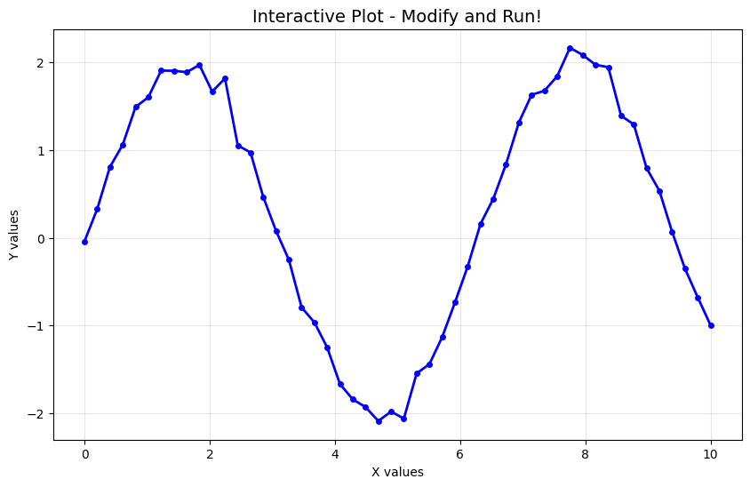
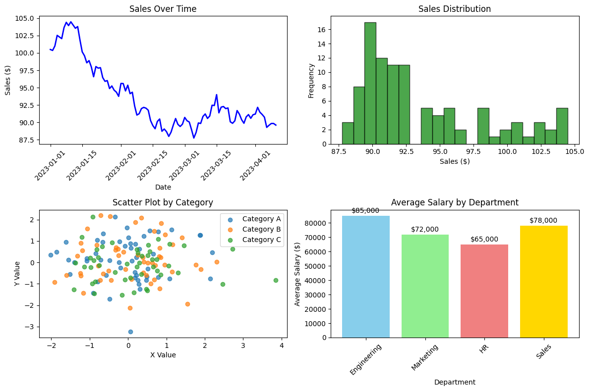

=== Pandas Basics ===
Sample DataFrame:
Name Age City Salary Department
0 Alice 25 New York 70000 Engineering
1 Bob 30 London 80000 Marketing
2 Charlie 35 Tokyo 90000 Engineering
3 Diana 28 Paris 65000 HR
4 Eve 32 Sydney 75000 Marketing
DataFrame info:
Shape: (5, 5)
Columns: ['Name', 'Age', 'City', 'Salary', 'Department']
Data types:
Name object
Age int64
City object
Salary int64
Department object
dtype: object
Basic statistics:
Age Salary
count 5.000000 5.000000
mean 30.000000 76000.000000
std 3.807887 9617.692031
min 25.000000 65000.000000
25% 28.000000 70000.000000
50% 30.000000 75000.000000
75% 32.000000 80000.000000
max 35.000000 90000.000000
Engineering employees:
Name Age City Salary Department
0 Alice 25 New York 70000 Engineering
2 Charlie 35 Tokyo 90000 Engineering
Salary by department:
mean min max
Department
Engineering 80000.0 70000 90000
HR 65000.0 65000 65000
Marketing 77500.0 75000 80000
DataFrame with new columns:
Name Age Age_Group Salary Salary_Rank
0 Alice 25 Young 70000 4.0
1 Bob 30 Young 80000 2.0
2 Charlie 35 Mid 90000 1.0
3 Diana 28 Young 65000 5.0
4 Eve 32 Mid 75000 3.0
1.3 Working with Your Own Data Files
📁 Upload Your Own CSV Files
With Quarto Drop, you can drag and drop your own CSV files directly into the browser! Try uploading a CSV file in the area below and analyze it with Pandas.
data.csv
# Drag and drop your CSV file here to upload itimport pandas as pdimport io# This will work when you drop a CSV filetry:# Read the uploaded file df_uploaded = pd.read_csv('data.csv')print("=== Your Uploaded Data ===")print(f"Dataset shape: {df_uploaded.shape}")print(f"Columns: {list(df_uploaded.columns)}")print("\nFirst 5 rows:")print(df_uploaded.head())print("\nBasic statistics:")print(df_uploaded.describe())# Show data typesprint(f"\nData types:")print(df_uploaded.dtypes)exceptFileNotFoundError:print("📁 No file uploaded yet. Drag and drop a CSV file above to analyze it!")print("You can create a simple CSV file with columns like: Name,Age,City,Salary")exceptExceptionas e:print(f"Error reading file: {e}")print("Make sure your file is a valid CSV format.")
📁 No file uploaded yet. Drag and drop a CSV file above to analyze it!
You can create a simple CSV file with columns like: Name,Age,City,Salary
🎯 Try This
Create a simple CSV file on your computer with data like:
With Quarto Live, you can modify the plotting code below and see the results instantly! Try changing colors, plot types, or data values to experiment with different visualizations.
import matplotlib.pyplot as pltimport numpy as npimport pandas as pd# Configure matplotlib for Quartoplt.rcParams['figure.figsize'] = (10, 6)plt.rcParams['figure.dpi'] =100print("=== Interactive Data Visualization ===")# Interactive example: Create your own datax = np.linspace(0, 10, 50)y = np.sin(x) *2+ np.random.normal(0, 0.1, 50) # Try changing the multiplier!plt.figure(figsize=(10, 6))plt.plot(x, y, 'bo-', markersize=4, linewidth=2, color='blue') # Try different colors!plt.title('Interactive Plot - Modify and Run!', fontsize=14)plt.xlabel('X values')plt.ylabel('Y values') plt.grid(True, alpha=0.3)plt.show()print("Try modifying the plot above - change colors, markers, or the mathematical function!")# Generate sample datanp.random.seed(42)dates = pd.date_range('2023-01-01', periods=100, freq='D')values = np.cumsum(np.random.randn(100)) +100sales_data = pd.DataFrame({'Date': dates, 'Sales': values})# Line plotplt.figure(figsize=(12, 8))plt.subplot(2, 2, 1)plt.plot(sales_data['Date'], sales_data['Sales'], linewidth=2, color='blue')plt.title('Sales Over Time')plt.xlabel('Date')plt.ylabel('Sales ($)')plt.xticks(rotation=45)# Histogramplt.subplot(2, 2, 2)plt.hist(sales_data['Sales'], bins=20, alpha=0.7, color='green', edgecolor='black')plt.title('Sales Distribution')plt.xlabel('Sales ($)')plt.ylabel('Frequency')# Scatter plot with categoriescategories = ['A', 'B', 'C']x = np.random.randn(150)y = np.random.randn(150)colors = np.random.choice(categories, 150)plt.subplot(2, 2, 3)for category in categories: mask = colors == category plt.scatter(x[mask], y[mask], label=f'Category {category}', alpha=0.7)plt.title('Scatter Plot by Category')plt.xlabel('X Value')plt.ylabel('Y Value')plt.legend()# Bar plotdepartments = ['Engineering', 'Marketing', 'HR', 'Sales']avg_salaries = [85000, 72000, 65000, 78000]plt.subplot(2, 2, 4)bars = plt.bar(departments, avg_salaries, color=['skyblue', 'lightgreen', 'lightcoral', 'gold'])plt.title('Average Salary by Department')plt.xlabel('Department')plt.ylabel('Average Salary ($)')plt.xticks(rotation=45)# Add value labels on barsfor bar, salary inzip(bars, avg_salaries): plt.text(bar.get_x() + bar.get_width()/2, bar.get_height() +1000,f'${salary:,}', ha='center', va='bottom')plt.tight_layout()plt.show()print("Visualization plots created successfully!")
=== Interactive Data Visualization ===
/tmp/ipykernel_132962/2707780485.py:16: UserWarning: color is redundantly defined by the 'color' keyword argument and the fmt string "bo-" (-> color='b'). The keyword argument will take precedence.
plt.plot(x, y, 'bo-', markersize=4, linewidth=2, color='blue') # Try different colors!

Try modifying the plot above - change colors, markers, or the mathematical function!

Visualization plots created successfully!
2 Working with Different File Formats
📊 Upload Excel and Other Data Files
Beyond CSV files, you can also upload Excel files (.xlsx), JSON files, and other formats for analysis. Try dropping different file types below!
datafile
# Drag and drop Excel, JSON, or other data files hereimport pandas as pdimport jsonimport osdef analyze_uploaded_file(filename):"""Analyze different types of uploaded files"""try: file_ext = os.path.splitext(filename)[1].lower()if file_ext =='.csv': df = pd.read_csv(filename)print(f"📊 CSV file loaded: {filename}")elif file_ext in ['.xlsx', '.xls']: df = pd.read_excel(filename)print(f"📈 Excel file loaded: {filename}")elif file_ext =='.json':withopen(filename, 'r') as f: data = json.load(f) df = pd.json_normalize(data)print(f"🔗 JSON file loaded: {filename}")else:print(f"❌ Unsupported file type: {file_ext}")print("Supported formats: CSV (.csv), Excel (.xlsx, .xls), JSON (.json)")return# Analyze the loaded dataprint(f"\n=== File Analysis ===")print(f"Shape: {df.shape}")print(f"Columns: {list(df.columns)}")print(f"Memory usage: {df.memory_usage(deep=True).sum() /1024:.1f} KB")print(f"\n=== First 3 rows ===")print(df.head(3))print(f"\n=== Data types ===")print(df.dtypes)# Check for missing values missing_values = df.isnull().sum()if missing_values.any():print(f"\n=== Missing values ===")print(missing_values[missing_values >0])else:print("\n✅ No missing values found!")# Quick statistics for numeric columns numeric_cols = df.select_dtypes(include=[np.number]).columnsiflen(numeric_cols) >0:print(f"\n=== Statistics for numeric columns ===")print(df[numeric_cols].describe())return dfexceptExceptionas e:print(f"❌ Error processing file: {e}")print("Please ensure your file is in a valid format.")# Check if a file was uploadedtry: uploaded_files = [f for f in os.listdir('.') if f !='datafile']if uploaded_files:forfilein uploaded_files:ifnotfile.startswith('.'): # Skip hidden files df_analysis = analyze_uploaded_file(file)breakelse:print("📁 No file uploaded yet.")print("Supported formats:")print("• CSV files (.csv)")print("• Excel files (.xlsx, .xls)") print("• JSON files (.json)")print("\nDrag and drop a file above to analyze it!")exceptExceptionas e:print("📁 Drag and drop a data file above to get started!")
NumPy for numerical computations; Pandas for data manipulation and analysis
Supervised has labeled data; unsupervised finds patterns in unlabeled data
Remove, impute with mean/median/mode, or use advanced imputation techniques
Accuracy, precision, recall, F1-score, ROC-AUC for classification
7 Best Practices
Start with data exploration - understand your data before modeling
Clean data thoroughly - garbage in, garbage out
Feature engineering - create meaningful features from raw data
Cross-validation - properly evaluate model performance
Document everything - reproducible analysis is crucial
Version control - track data, code, and model versions
8 Next Steps
Excellent! You now have a solid foundation in data science with Python. Next, we’ll explore Web Development to learn how to build web applications with Streamlit and FastAPI.